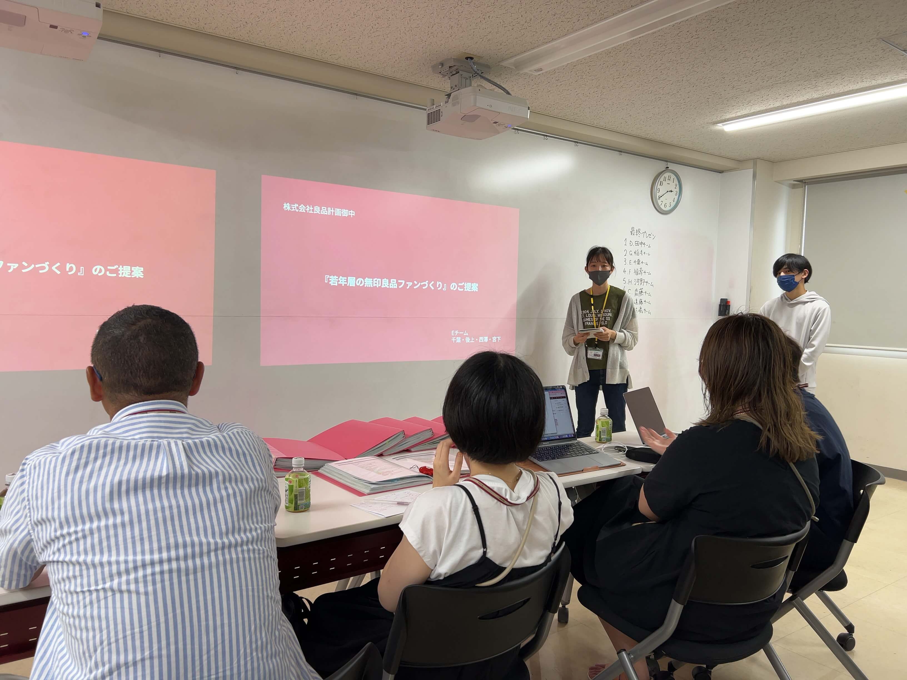

Loading...
産学連携
無印良品
サービス提案
制作期間：2022年6月8日〜2022年8月10日
【約2ヶ月】
利用ツール：PremierPro・Photoshop・Illustrator・Figma・IbisPaint
学校課題、産学連携、サービス提案

専門学校2年生前期に、無印良品様と産学連携して、4人チームのチームリーダーとして、
若年層に向けたサービスのご提案をさせていただきました。
最終プレゼン発表スライド
最初の企画が頓挫してしまい、その際、一時期話題になった無印良品様のキャラクターを思い出しました。
そのキャラクターを使って企画をしたら面白いのではないかと思い、一から企画を考え直しました。
成果物
感想
初めてのチームリーダーでドキドキしましたし失敗もたくさんしてしまいましたが、完成した作品が良品計画様に認められてお褒めいただいたことが嬉しくて、自信がつきました。